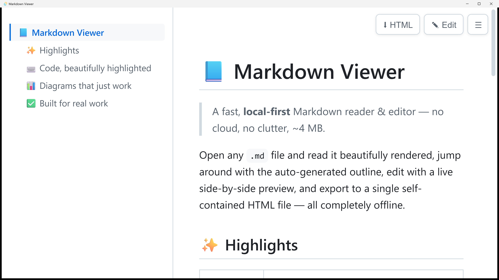
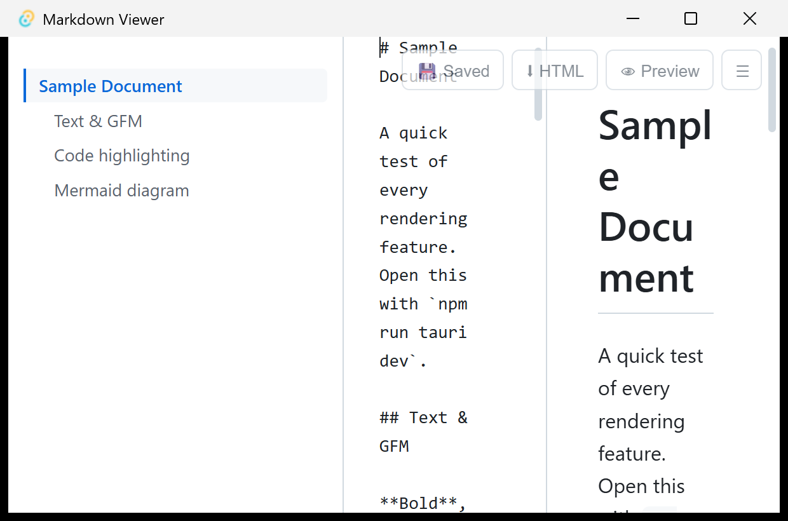

一款輕量、完全本機的 Markdown 檢視器與編輯器。使用作業系統內建的 WebView 而非內嵌整個 Chromium —— 因此執行檔僅約 4 MB、閒置記憶體約 30–60 MB。沒有雲端、沒有遙測，全部離線運作。 A lightweight, fully-local Markdown viewer & editor. It uses the OS-native WebView instead of bundling Chromium — so the binary is just ~4 MB and idle RAM ~30–60 MB. No cloud, no telemetry, fully offline.
該有的渲染功能一個不少，又保持極致輕量。Everything you'd want to render, while staying extremely light.
依標題自動建立，捲動時高亮目前章節，Ctrl+\ 可收合。Auto-built from headings, highlights the current section while scrolling, collapse with Ctrl+\.
分割編輯器、左右同步捲動（Ctrl+E），Ctrl+S 存回磁碟。Split editor with synced scroll (Ctrl+E), save to disk with Ctrl+S.
延遲載入，只有文件真的含 mermaid 區塊時才付出成本；可點圖開啟縮放燈箱。Lazy-loaded — only paid for when a doc actually has a mermaid block. Click to open a zoom/pan lightbox.
程式碼區塊以 highlight.js 上色；表格、任務清單、刪除線等 GFM 全支援。Code blocks via highlight.js; full GFM — tables, task lists, strikethrough.
在原檔旁產生單一自包含 .html，內含大綱、語法高亮與內嵌的 Mermaid SVG。Produces a single self-contained .html next to the source — outline, highlighting and inline Mermaid SVG included.
監看開啟中的檔案，存檔後自動重新渲染；雙擊或拖放 .md 即可開啟。Watches the open file and re-renders on save; double-click or drag-and-drop any .md.
渲染後 HTML 經 DOMPurify 清理並套用嚴格 CSP，打開不信任文件也不會執行惡意腳本。Rendered HTML is sanitized with DOMPurify under a strict CSP — untrusted docs can't run scripts.
開頭的 --- 區塊渲染成漂亮的 metadata 卡片（標題、描述、日期、標籤、Draft 徽章）。The leading --- block renders as a tidy metadata card (title, description, date, tags, Draft badge).
跟隨系統設定自動切換；本機相對路徑圖片正確顯示，外部連結以預設瀏覽器開啟。Follows the system setting; local relative-path images render, external links open in your browser.
文件內搜尋（Ctrl+F）、開啟檔案對話框（Ctrl+O）與最近開啟清單。In-document search (Ctrl+F), open dialog (Ctrl+O) and a recent-files list.
閱讀與編輯，兩種模式一鍵切換。Read and edit — one keystroke apart.
左側的章節大綱依文件標題自動產生；點任一項即可跳轉，並會高亮你目前正在閱讀的章節。The left-side outline is built automatically from headings — click to jump, and it highlights the section you're currently reading.

按 Edit（或 Ctrl+E）開啟分割編輯器。預覽隨輸入即時更新，左右兩欄同步捲動，Ctrl+S 存回磁碟。Press Edit (or Ctrl+E) for a split editor. The preview updates as you type, both panes scroll in sync, and Ctrl+S saves to disk.

到 Releases 頁面取得最新版本，所有平台皆有對應檔案。Grab the latest build from Releases — binaries for every platform.
| 平台Platform | 檔案File |
|---|---|
| Windows（免安裝可攜版）Windows (portable) | Markdown.Viewer_*_x64_portable.exe |
| Windows（安裝版）Windows (installer) | *_x64-setup.exe / *_x64_en-US.msi |
| macOS (Apple Silicon / Intel) | *_aarch64.dmg / *_x64.dmg |
| Linux | *_amd64.AppImage · *_amd64.deb · *.x86_64.rpm |
.md 檔案關聯（雙擊即可開啟）；可攜版免安裝即可執行，但不更改檔案關聯。所有版本都需要系統內建的 WebView（Windows 11 已預載 WebView2）。macOS 首次開啟若被攔下，可右鍵「開啟」，或於終端機執行 xattr -cr "/Applications/Markdown Viewer.app" 解除隔離。
Note: the installer registers the .md file association (double-click to open); the portable build runs without installing but won't change associations. All builds need the OS-native WebView (WebView2 ships with Windows 11). On first launch macOS may block the app — right-click → Open, or run xattr -cr "/Applications/Markdown Viewer.app" to clear quarantine.
取得對應平台的檔案，可攜版雙擊即開，無需安裝。Get the build for your platform — the portable one opens with a double-click, no install.
雙擊任何 .md 檔、把檔案拖進視窗，或按 Ctrl+O 開啟對話框。Double-click any .md, drag a file into the window, or press Ctrl+O.
用大綱導覽，Ctrl+E 進編輯模式，需要分享時一鍵匯出自包含 HTML。Navigate via the outline, hit Ctrl+E to edit, and export a self-contained HTML when you need to share.
開源、可稽核、完全離線 —— 你的文件永遠不離開這台電腦。Open-source, auditable, fully offline — your files never leave your machine.
所有安裝檔皆由 GitHub Actions 直接從公開原始碼自動建置，建置流程公開可查。Every installer is built by GitHub Actions directly from the public source — the pipeline is fully visible.
不連線、不上傳、不追蹤。Markdown 在本機渲染，完全離線運作。No connections, no uploads, no tracking. Markdown is rendered locally, entirely offline.
渲染輸出經 DOMPurify 清理並套用嚴格 CSP，打開不信任文件也安全。Rendered output is DOMPurify-sanitized under a strict CSP, so untrusted docs stay safe.